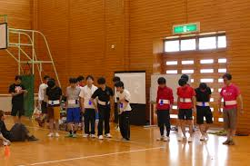
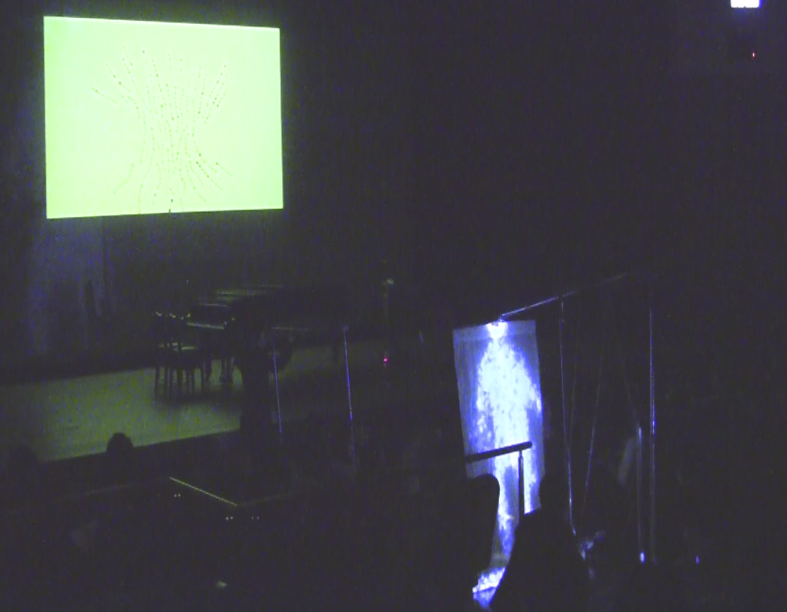
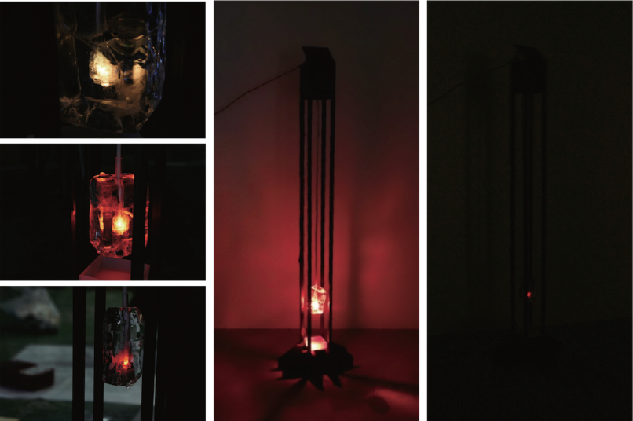
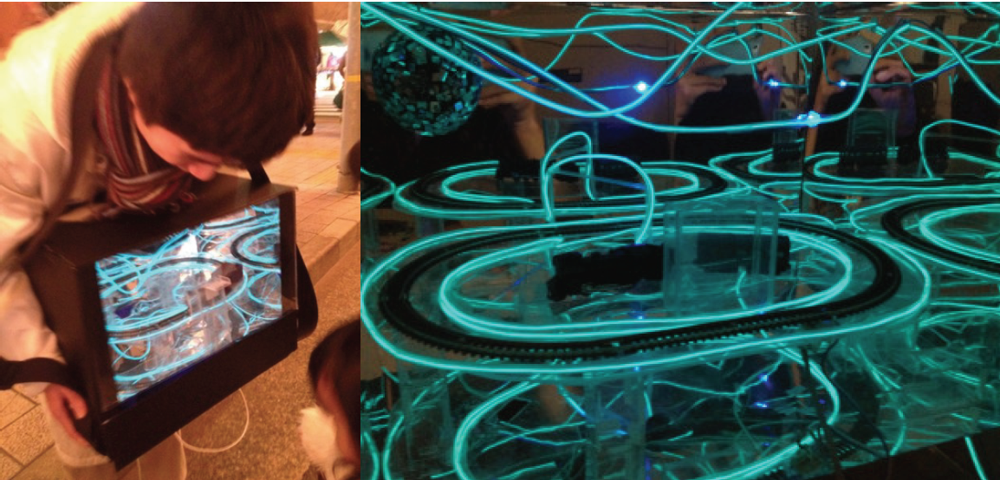
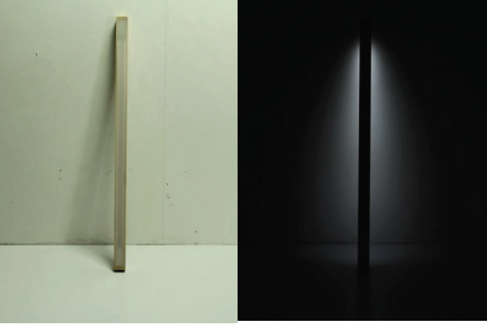
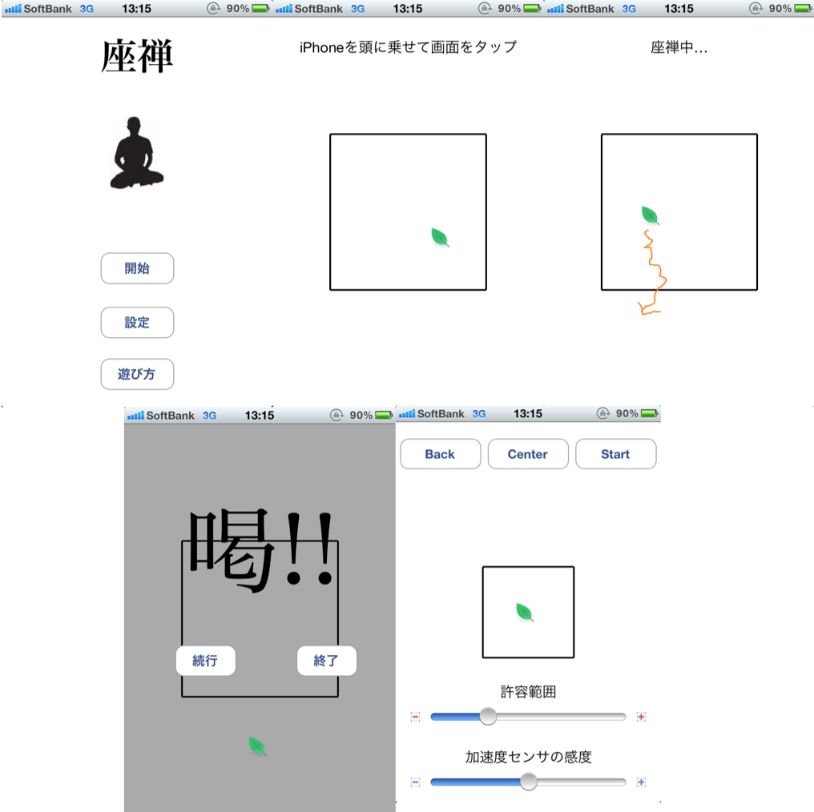
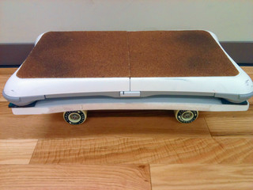
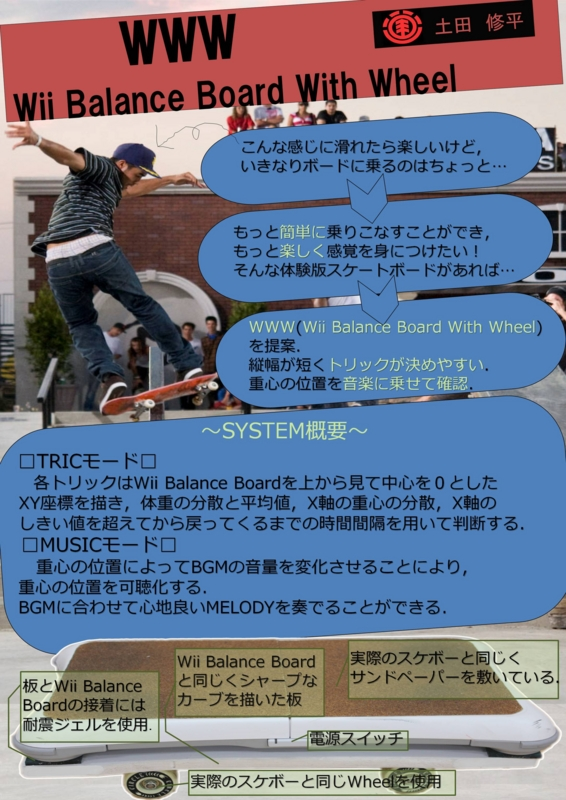

This page introduces works that are not related to research.
You can overlay the road that you have passed so far on a map. You can guess a distance from the road you usually pass.
ゼミ旅行のドクター企画。その時のドクターたちで作ってみたもの。 ダルマさんが転んだのアウト/セーフ判定を機械がしてくれる。 お腹にスマホを装着していて、加速度センサから動きを検出、アウトかセーフかの判定をしている。
[Blog]
三木隆裕，大西鮎美，出口嵐以貴，土田修平，伊藤悠真，寺田 努，塚本昌彦: ウェアラブルだるまさんがころんだ: 加速度センサによる機械判定を用いた多人数型ゲームの実装と運用, エンタテインメントコンピューティング2017論文集, No. 30, pp. 174--183 (Sep. 2017).

You can play with shiny spheres by using your shadow. I exhibited this work at IVRC 2015.
[Article]
The shadow of the performer walks between the spectators.
[Blog]

Performance at 特定非営利活動法人ウェアラブルコンピュータ研究開発機構 NPO設立10周年記念シンポジウム.
[Blog]
Luminaires in which LEDs are embedded in ice.
氷の線香花火。 氷の中にLEDを埋め込んだ照明器具。
[Blog]
- Designer
- YUTA FUKUHARA
- TAKERU YOSIHARA
- Engineer
- SHUHEI TSUCHIDA
- Production
- MASAMI KOZIMA

The model train carries money and donates.

見た目はただの角材。上下逆さにすると光が点灯する。 中には加速度センサが入っており、角材の姿勢を検出できる。

頭にスマホを乗っけて座禅をするという謎iPhoneアプリ。 身体が傾きすぎるとバイブレーションが振動、「喝」を入れてくる。

Wii balance boardにスケボーをくっつけた。 加速度・角速度センサで検出できそうなことを重心位置の変化のみで検出。 プログラミングのいい勉強になった。 姿勢を変えたり、技を決めると音が鳴る。Make: Ogaki Meeting 2012 にて展示。
[Blog]
研究配属して初めて作ったポスターである。画像のアスペクト比を無視するなど、なかなかである。
